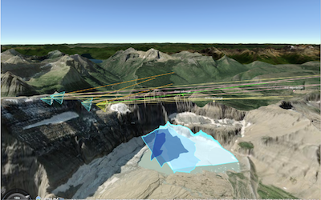
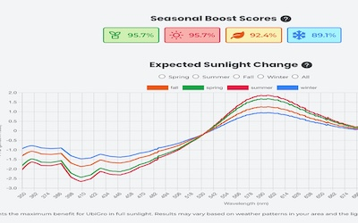
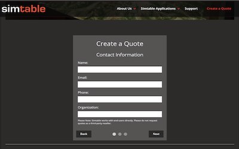
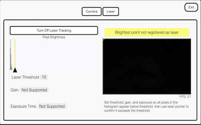

Building geospatial web tools for climate tech & GIS.
Hi! I’m Leila, a web developer with a passion for geospatial tech, real-time visualization, and climate science. I enjoy designing tools that help people understand the world around them. I work in tech because the web is undoubtedly the powerful tool we have for communcating ideas and sharing imformation. After my family was freed from living under dictatorship in the 2012 Arab Spring, I realized the web was place where important ideas could spark societal change. After a few formative side quests as an outdoor educator and ceramics artist, I turned my professional attention to web development in 2020.
I believe in the web as a space where everyone is meant to contribute. This site being served from a retired 2018 Mac Mini sitting on my desk. I poked a hole in my home Wi-Fi network and use a cron job to keep DNS records up to date with GoDaddy.
The goal was to use as few out-of-the-box solutions as possible to get a site live. It’s simple, but in a time of hosted pages and cloud compute, it’s important to remember where it all started.

This project used Cesium's 3d globe to bring in vector layers. I worked on getting the vector layers to drape over the landscape. The platform creates STAC items for layers added to the platform, I added the views tag to our STAC files to use it persist line color, fill color, visibilty and transparency. I have done a bunch of other work in this UI with Shoelace components and LIT to get reactive state updates.

This project used the MEERA-2 dataset to model the product's potential benefit to customers. There is a python implementation of the Bird Climate model. I built the React UI which displayed results beautifully in the browser. Ugh, I need to get this one back up so I can get better screenshots of results!

This project used Cesium's 3d globe to bring in vector layers. I worked on getting the vector layers to drape over the landscape. The platform creates STAC items for layers added to the platform, I added the views tag to our STAC files to use it persist line color, fill color, visibilty and transparency. I have done a bunch of other work in this UI with Shoelace components and LIT to get reactive state updates.

This project used Cesium's 3d globe to bring in vector layers. I worked on getting the vector layers to drape over the landscape. The platform creates STAC items for layers added to the platform, I added the views tag to our STAC files to use it persist line color, fill color, visibilty and transparency. I have done a bunch of other work in this UI with Shoelace components and LIT to get reactive state updates.